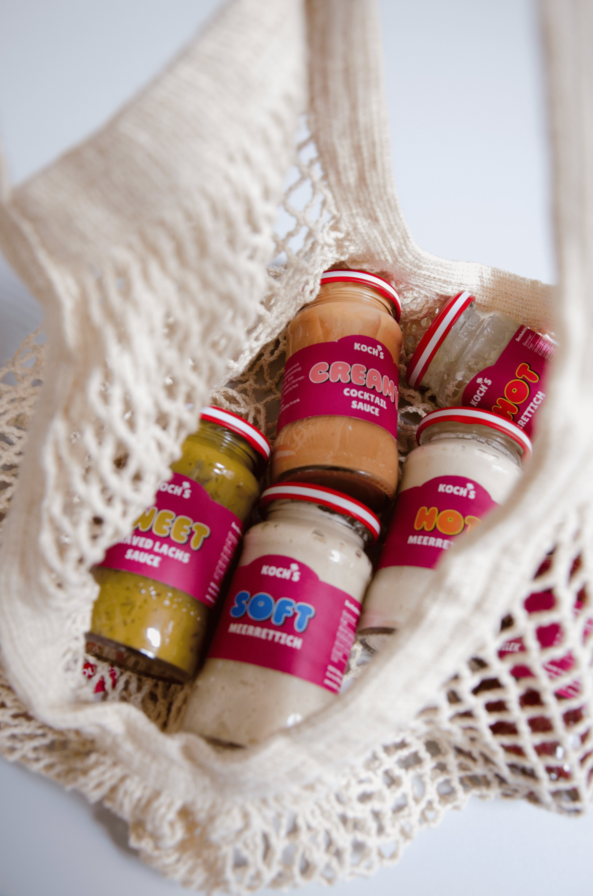
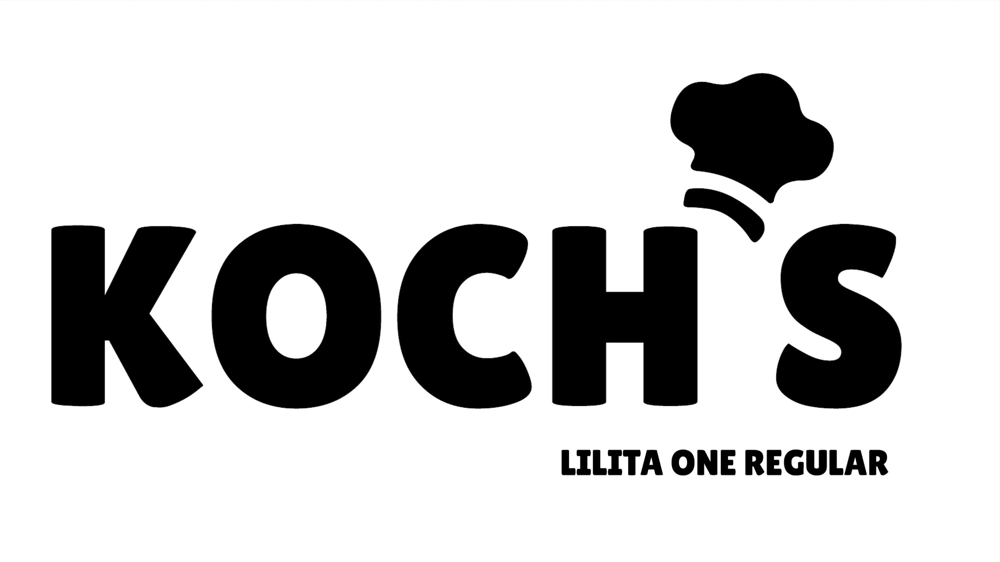
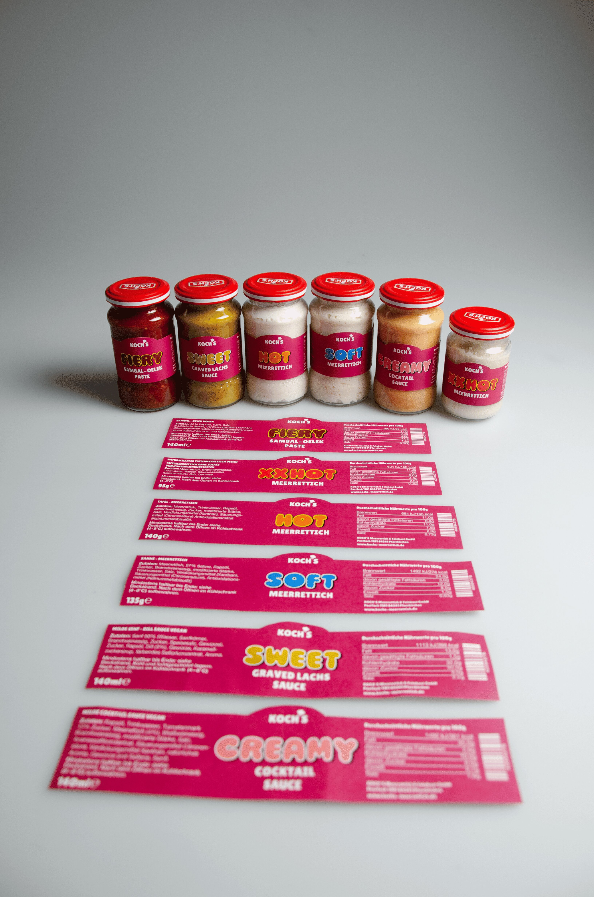
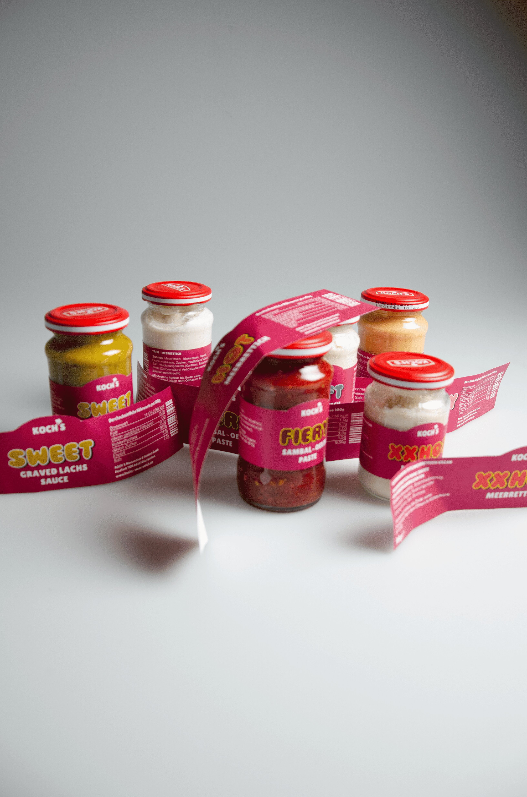

COOPERATE & BRANDING




This project involves the corporate branding of the horseradish brand Koch. It is a redesign aimed at rejuvenating the Koch brand without disrupting its traditional roots, while also establishing a fresh presence in the market. The project includes a new logo, updated colors, new labeling, and a standout position on the shelf. Additionally, a campaign was created that highlights the brand’s heat level, further emphasizing the brand’s rejuvenation and showcasing the versatility of Koch’s horseradish—whether spicy or mild, it offers both. The brand is also now present on social media platforms
KOCHS HORSERADISH
